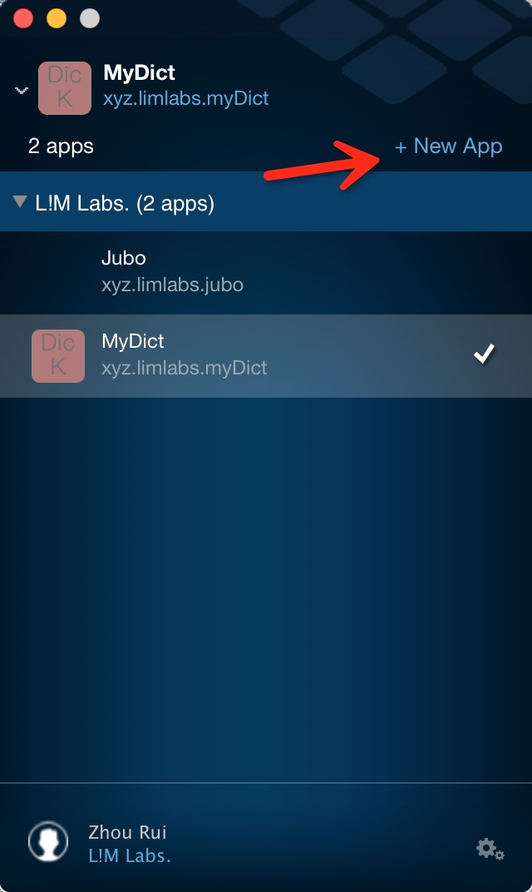
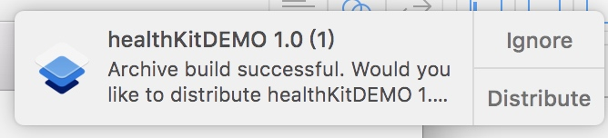
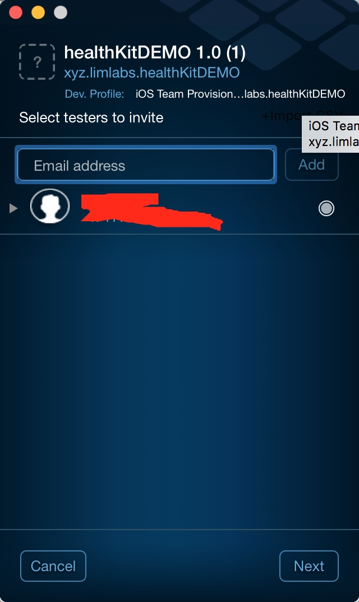
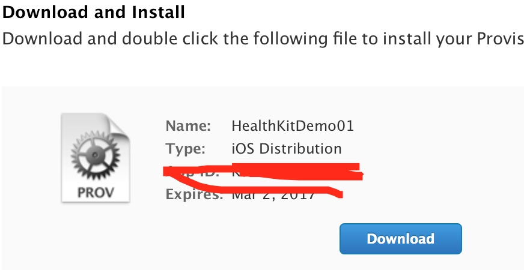

现在市面上做内测分发的厂商有很多,国内的就有fir.im,蒲公英等等.但是个人感觉Twitter Fabric的一站式服务更加适合我(因为有可视化的App,也不用敲代码🌝🌚)
流程
准备工作
- 注册Fabric账号
- 下载Fabric的桌面程序
- 使用Fabric Beta需要安装 Crashlytics Kit,你可以先用Cocoapods之类的下载,也可以稍后用Fabric App安装
添加App
在Fabric桌面程序中按照指示添加App
安装SDK
这里直接将Fabric上的文件夹拖入项目中即可配置SDK
- 在
AppDelegate.swift中导入Fabric和Crashlytics 在
application(application: UIApplication, didFinishLaunchingWithOptions launchOptions: [NSObject: AnyObject]?)
方法中加入Fabric.with([Crashlytics.self])
- 在
运行
此时App已经被成功添加了

Build
当App构建完毕时,Fabric会弹出通知询问你是否要进行分发
邀请测试者
添加测试者的邮件进行邀请

Fabric会给邮箱发送邮件
之后再iOS设备上打开后会提示安装描述文件以获得设备的UDID,随后Fabric会将测试者提交的UDID发送给你
添加设备的UDID并更新Provisioning Profile
前往开发者网站的Device添加设备的UDID
创建一个新的Provisioning Profile并下载下来并打开添加

修改Xcode项目的Provisioning Profile

选择刚才新建的HealthKitDemo01再重新构建即可.